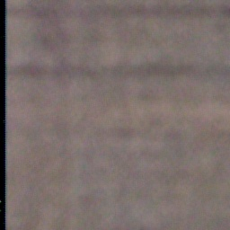
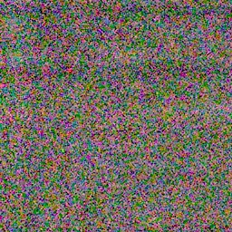
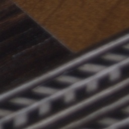
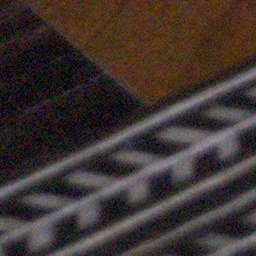
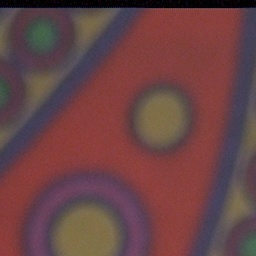

Goal. The pipeline declares a noise metric in rule_based.py's docstring but never
implemented one. Does any existing pipeline score detect real sensor noise — and what would a noise metric cost?
D:\DataSets\SIDD_Small_sRGB_Only. Sampled 3 patch pairs per scene = 480 pairs.skimage.restoration.estimate_sigma), negated so higher = cleaner..venv/Scripts/python scripts/experiment_defectscore_noise.py. Raw scores: data/scores.csv.| Method | Pair accuracy | AUC | Pair acc, ISO≥1600 (n=117) |
|---|---|---|---|
| Ours — overall rule-based score | 0.0% | 0.054 | 0.0% |
| Ours — Laplacian sharpness | 0.0% | 0.013 | 0.0% |
| Classical — wavelet sigma | 100.0% | 0.993 | 100.0% |
| SOTA — MUSIQ | 61.9% | 0.572 | 52.1% |
The hypothesis is confirmed, catastrophically. Our scores are not merely blind to noise — they are inverted. Sensor noise is high-frequency energy, so Laplacian variance explodes on noisy images (median 12.5 clean → 487.9 noisy — a 39× inflation), and since sharpness carries 40% of the overall score, the noisy image wins every single one of the 480 pairs. At ISO 3200 a noisy patch scored overall 0.88 vs 0.32 for its clean twin. MUSIQ is also unreliable on these patches (61.9%, barely above chance — it was trained on whole photos, not 256-px crops). The 30-year-old wavelet estimator is essentially perfect and costs ~20 ms/image.





Full image set: D:\DataSets\SIDD_Small_sRGB_Only (160 scene dirs, GT/NOISY patch pairs).
estimate_sigma as a noise metric — near-perfect here and ~20 ms;
(2) noise-correct the sharpness score, e.g. median-denoise before the Laplacian or subtract a sigma-dependent
term; (3) re-run the RealBlur benchmark to confirm blur ranking survives the correction.
Generated 2026-07-10 by scripts/experiment_defectscore_noise.py;
metrics in data/metrics.json.